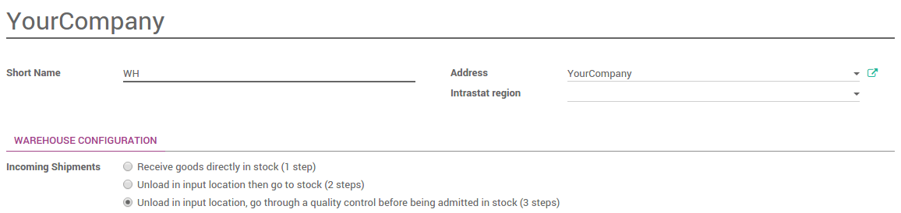
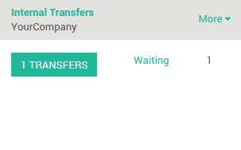
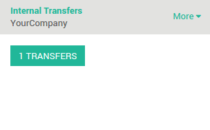

Overview
In many companies, it is necessary to assess the received good. The goal is to check that the products correspond to the quality requirements agreed with the suppliers. Therefore, adding a quality control step in the goods receipt process can become essential.
Odoo uses routes to define exactly how you will handle the different receipt steps. The configuration is done at the level of the warehouse. By default, the reception is a one step process, but changing the configuration can allow to have 2 or even 3 steps.
The 3 steps flow is as follows: You receive the goods in an input area, then transfer them into quality area for quality control. When the quality check has been processed, you can move the goods from QC to stock. Of course, you may change the quantity and only transfer to stock the quantity that is valid and decide that you will return the quantity that is not good.
This is the case that will be explained in this document.
Configuration
Use advanced routes
To allow management of routes, go to the menu .

Ensure that the routes option Advance routing of product using rules is checked, then click on Apply to save changes.
Make sure that Manage several locations per warehouse is also ticked.
How to add a quality control step in goods receipt?
Go to the menu and choose the warehouse where you want to change reception methods.
By default, warehouses are configured with one step reception (Receive goods directly into stock).
To add quality control before transfer goods into stock location, tick Unload in input location, go through a quality control before being admitted in stock (3 steps).
How to control a receipt?
How to process the receipt step ?
- In the Purchase app, create a Request for Quotation. Click on the Confirm order button. You can see that there is one Shipment related to purchase order in the stat button above the purchase order form view. This is the receipt step.
- Go to Inventory and click on the link # TO RECEIVE in the Receipts card.

- Click on the receipt that you want to process. Click on Validate to complete the move from the Vendor location to WH/Input.
This has completed the receipt step and the status column at the top of the page for WH/IN should now show Done. The product has been moved from the Vendor to the WH/Input location, which makes the product available for the next step (Move to the quality control zone)
How to move your product from the receipt zone to the quality control zone ?
Go to the Inventory dashboard. You will see that there is one transfer ready (the move to the quality control zone) and one waiting (the move to the stock after the control). Click on the link # TRANSFERS in the Internal Transfers to process the quality control.
Click on the picking that you want to process.
Click on Validate to complete the move from WH/Input to WH/Quality Control.
This has completed the internal transfer step and the status column at the top of the page for WH/INT should now show Done. The receipt is now ready to be controlled.
How to to process the quality control ?
Go back to the Inventory dashboard. The waiting transfer is now ready. Click on the link # TRANSFERS in the Internal Transfers card to process the quality control.
Click on the last picking to process. Click on Validate to complete the move from WH/Quality Control to WH/Stock.
This has completed the quality control step and the status column at the top of the page for WH/INT should now show Done. The receipt has been controlled and has moved to your stock.